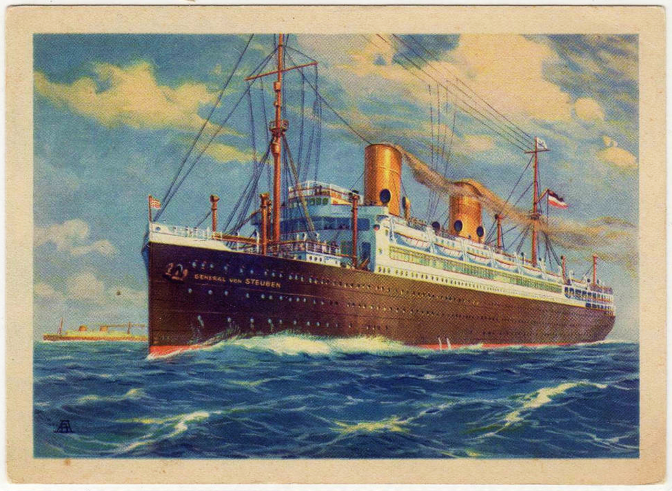
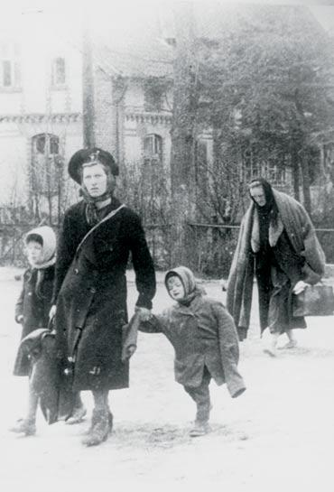
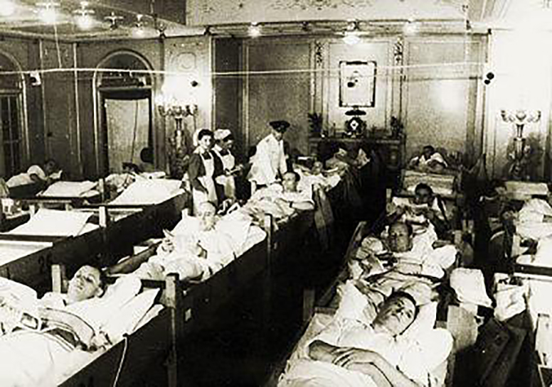

The General von Steuben - formerly called München, but renamed in 1938 - was a German passenger ship, which from 1944 was used as a troop carrier and hospital ship. On 10 February 1945, four months after Dad's voyage to Danzig, the Steuben was to be sunk by a Russian submarine whilst en route to Swinemünde (Świnoujście), with the loss of more than 4,500 refugees and wounded soldiers. In the winter of 1945, East Prussian refugees headed west, away from the city of Königsberg, one step ahead of the advancing Soviet Army which attacked them from the air. Thousands fled to the Baltic Sea port at Pillau hoping to board ships that would carry them to safer regions in western Germany. The Wilhelm Gustloff was one such vessel as was the Steuben, a luxury liner drafted into service for the Third Reich. On February 9, 1945, loaded with as many as 5,200 refugees and wounded German soldiers, the Steuben began her final voyage as part of Operation Hannibal.


Heading west the Steuben was sighted by Soviet Capt. Alexander Marinesko who had already sunk the Wilhelm Gustloff with the loss of 10,000 lives. Marinesko sighted a glow from the smokestacks of Steuben's coal-fired escorts, running at full power to stay with the faster ship. Four and a half hours later, he fired two torpedoes; the Steuben went down in 20 minutes. A frantic rescue saved 659 lives but more than 4,500 of its passengers perished - three times the death toll of Titanic and the third worst maritime disaster in history with the Wilhelm Gustloff and the Goya.